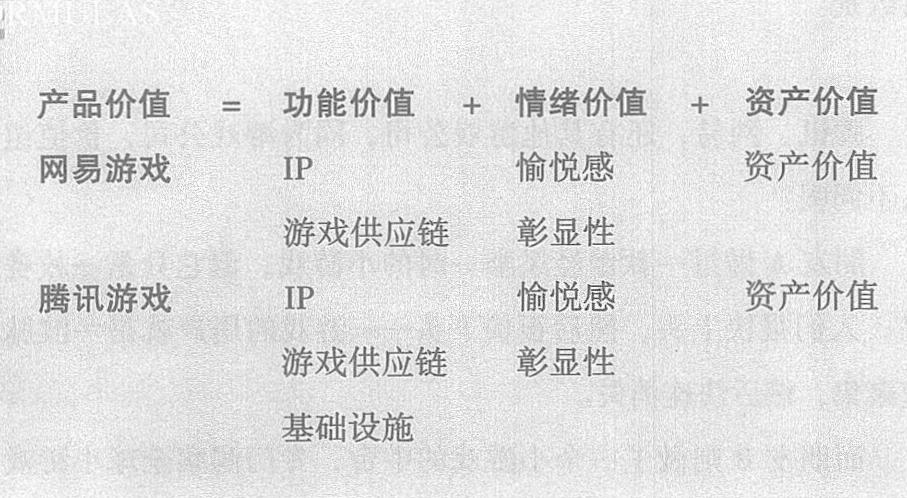

网易和腾讯就不同了。
网易早已成为一家游戏的供应链公司，自己持有大量用户积累了感情的IP，对如何提供情绪价值、创造虚拟物品的资产价值、维护游戏经济系统平衡，轻车熟路。
而腾讯呢? 除了拥有网易的所有能力，腾讯还提供基础设施。
四级四
所以，腾讯在游戏这个领域，是几乎无敌的存在。
二、品类的进化
回顾百年来商品的演化，我们发现，功能价值的商品一直在整合，而情绪价值的商品一直在分化。简单来说就是，工具越来越集成，情绪消费越来越多。
比如，我们亲眼见证了手机这个缝合怪的诞生。它吃掉了几乎所有的随身小工具：记事本、手电筒、收音机、录音机、MP3、闹钟、手表、摄像机、相机，等等(见图4-1)。
074